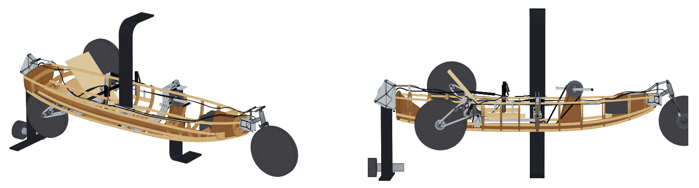
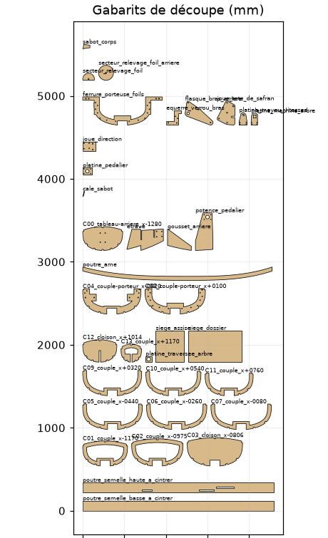

Elle roule
Trois roues de 20 pouces, les deux roues arrière motrices, et un moteur de pédalier de 250 W en 48 V. Foils repliés, elle mesure 1,00 m de large.
Projet personnel · Nantes · étude de concept
Un trike couché à assistance électrique qui roule jusqu'à la rivière, y flotte, puis vole sur ses foils. Une coque en bois et en toile, des pièces de vélo du commerce, et encore beaucoup de questions à résoudre.
Dites-le à voix haute : en Phoebe, amphibie. Phoebé est aussi une titanide, fille du Ciel et de la Terre.
Sur route : foils avant repliés sous leurs housses, mât arrière relevé, capote solaire en place, un pédalier assisté.
Le concept
Partir de chez soi à vélo, descendre la cale, relever les roues et continuer sur l'Erdre. Sans remorque, sans voiture, sans changer de siège.
Trois roues de 20 pouces, les deux roues arrière motrices, et un moteur de pédalier de 250 W en 48 V. Foils repliés, elle mesure 1,00 m de large.
Roues relevées, la coque de 416 litres ne s'enfonce que de 15 cm avec son pilote. Un moteur immergé, au pied du foil arrière, prend le relais. L'idée : qu'il pousse d'autant plus que l'on pédale.
Deux foils en L à l'avant, un foil en T à l'arrière. L'objectif : décoller vers 20 km/h avec environ 1 kW. C'est un ordre de grandeur, pas encore un calcul.
Maquette 3D
Passez de la route à la rivière puis au vol, rangez la capote solaire, inclinez le siège pour la sieste, ajoutez un enfant à l'arrière ou comparez le prototype et la version de série.
En chiffres
Longueur de la coque, pour 0,74 m de large
Modèle CAOLargeur hors tout sur route, foils repliés
Modèle CAOVolume de coque sous le plat-bord
Modèle CAOTirant d'eau à 135 kg, véhicule et pilote
Modèle CAOEnvergure des foils avant déployés
Modèle CAOMasse à vide visée
EstimationPuissance pour voler vers 20 km/h
EstimationMatériel du prototype, entre 6 000 et 12 000 €
EstimationLes valeurs « modèle CAO » sortent du script paramétrique. Les estimations sont faites à la main et restent à confirmer.
Fabrication
La coque reprend la technique des kayaks traditionnels, dite skin-on-frame : une ossature légère, habillée d'une toile tendue. Peu d'outillage, des matériaux courants, un résultat réparable.


Conception
Phoebe est dessinée en CAO paramétrique, avec CadQuery. Changez une cote en tête du fichier : l'assemblage 3D, les gabarits et le bilan de masse et de flottabilité se recalculent.
Le modèle et les plans ne sont pas diffusés. Phoebe est un projet personnel, tous droits réservés.
Où en est-on
Phoebe est une étude de concept : aucune pièce n'a été découpée, calculée ni essayée. Tout peut encore être remis en question, et aucun essai sur l'eau n'aura lieu avant la validation de la structure.
Participer
Voici les points durs du projet, tels qu'ils sont aujourd'hui. Si l'un d'eux touche à votre métier ou à votre passion, votre avis est bienvenu : chaque carte ouvre une discussion sur GitHub.
Environ 3 kN par vis dans le contreplaqué à trois fois la charge. Comment le valider par un essai statique simple, puis par le calcul ?
En discuterPalpeurs mécaniques, foils en V ou volets pilotés ? Rien n'est conçu. Le choix des profils et des surfaces est ouvert lui aussi.
En discuterTout passe en 48 V : il existe des moteurs de pédalier de 250 W dans cette tension, celle du moteur immergé. Une seule batterie, donc. Reste à lui trouver sa place, et celle de la capote solaire.
En discuterUn seul rapport aujourd'hui, trop long pour remonter une cale. La piste : un moyeu de vélo à huit vitesses monté en renvoi, entre la chaîne du pédalier et l'arbre des roues. Le moyeu gauche demande toujours une roue libre inversée.
En discuterDeux sorties d'arbre et le passage des joues à l'étrave traversent la toile. Si vous avez construit un kayak en toile, vos conseils sont attendus.
En discuterUne goupille oblige à percer le carbone du mât. Un collier serait préférable : lequel, et comment le rendre orientable et relevable ?
En discuterStatut de vélo à assistance sur route, vitesse limitée sur l'Erdre, marquage CE des bateaux : que faut-il respecter, et dans quel ordre ?
En discuterModéliser le changement de vitesses, la version à siège enfant, la capote, les housses et l'éclairage.
En discuterLa poussée du moteur immergé suivrait le pédalage plutôt qu'une manette : un capteur de pédalage du commerce commande son variateur. Les roues relevées n'offrent presque pas de résistance : comment rendre l'effort réel ?
En discuterVélo couché, kayak en toile, foil, bateau électrique : un retour de terrain évite des mois d'erreurs.
Une cote douteuse, une hypothèse fragile, une idée plus simple ? Dites-le, c'est exactement ce qui manque.
Un atelier, une découpeuse, un coup de main pour l'essai statique ou une cale de mise à l'eau : faites signe.
Un projet personnel de Guillaume Godet, à Nantes. Étude de concept : rien n'est encore construit, et les questions ouvertes se discutent sur GitHub.